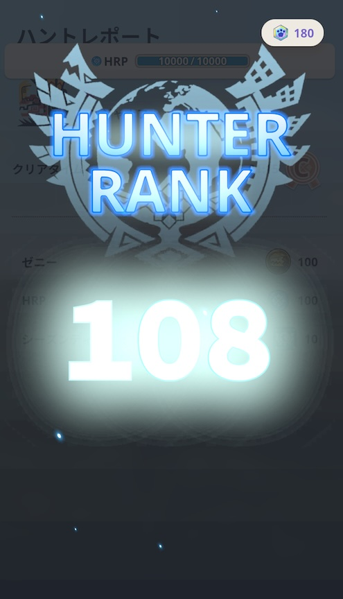

熊討伐できたらいいんですが - 2024/05/03 曇り時々雨
LEVEL108へ
TSUBASAの北海道旅で熊情報を気にしながら、憲法記念日のこの日はまた美浜を歩いています。
美浜は相変わらずすごい人出。でも那覇よりはマシかも。
 なぜ美浜を歩いているのかというと、大連続狩猟が捗るからです。RIEさんとふたりで北谷の平和を守るために大量にモンスターを狩ってます。山口家で流行っている、食べ歩きゲーミングウォーキングです。楽しいですよ。みなさんもご一緒にいかがでしょう？
なぜ美浜を歩いているのかというと、大連続狩猟が捗るからです。RIEさんとふたりで北谷の平和を守るために大量にモンスターを狩ってます。山口家で流行っている、食べ歩きゲーミングウォーキングです。楽しいですよ。みなさんもご一緒にいかがでしょう？
